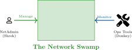
Figure: Diagram supporting the preceding content.
Review: Application Services and Resilience
Key Module 7 Ideas
Why This Matters in Module 8
Operations and monitoring keep those services healthy, measurable, and recoverable in production.
After completing this module, you will be able to:
Operations begin with accurate documentation, controlled changes, and lifecycle-aware asset management for stable environments.
8.1 Documentation: Maps for the Kingdom
Why Document?
Without a map, the network is a murky swamp. If the Admin leaves, the knowledge leaves with them!
Two Types of Maps
Physical Diagram:
Logical Diagram:
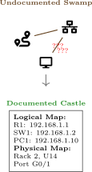
Figure: Diagram supporting the preceding content.
Configuration Management: Avoiding Chaos
The Concept
Managing device settings centrally to ensure consistency.
Key Terms
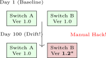
Figure: Diagram supporting the preceding content.
The Solution
Use automation tools (Ansible/Python) to force devices back to the Baseline!
What to Backup?
It’s not just files. You need:
Configuration: The ‘running-config‘ text file.
OS Image: The IOS/Firmware file.
State Data: ARP tables, MAC tables (for forensics).
The 3-2-1 Rule
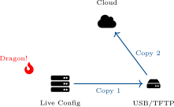
Figure: Diagram supporting the preceding content.
Change Management: The Royal Decree
Why we need Rules
Ogres are clumsy. If you smash a core switch without a plan, the kingdom goes dark. Change Mgmt minimizes risk.
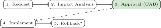
Figure: Diagram supporting the preceding content.
Critical Component: Rollback
Before you change anything, you must answer: "How do I undo this if it breaks the network?"
Change Types
Standard: Routine (Reset Password). Normal: Risky (New VLAN) -> Needs Approval. Emergency: Fix it NOW! (Firewall down).
Case Study: Donkey’s Unauthorized Wi-Fi
Scenario: "I’m making Waffles... and Wi-Fi!"
Donkey wants to stream music in the Swamp. He buys a cheap $20 Router from Best Buy and plugs it into the main Corporate Switch.
The Result:
Discussion
Which Change Management steps did Donkey skip?
What technical control could have stopped this immediately?
The Fix
8.1 Asset Inventory: Counting the Swamp Creatures
The Problem
If you don’t know what you own, you can’t patch it, and you certainly can’t secure it.
What to Track (The Tags)
Figure: Diagram supporting the preceding content.
Lifecycle Management: The Circle of Life
Hardware has a lifespan
Like onions (and ogres), hardware gets old and smelly.
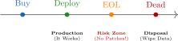
Figure: Diagram supporting the preceding content.
The "EoL" Danger
End of Life (EoL) means the vendor stops making security patches. If you keep an EoL firewall, you are inviting the Dragon in.
Decommissioning
Wipe the disk! Don’t sell a router on eBay with the Castle passwords still on it.
Physical Diagrams: The "Real World" Map
What it shows (Layer 1)
Used when you need to walk into the server room and touch something.
Scenario
"Donkey, go to the Dungeon Server Room, Rack 2. Move the yellow cable from Switch 1, Port 5 to Port 6."
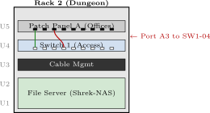
Figure: Diagram supporting the preceding content.
Logical Diagrams: The "Data Flow" Map
What it shows (Layer 3)
Used when you need to configure routing or firewalls.
Comparison
Physical: "The cable is plugged into Port 2." Logical: "The traffic flows from the User Subnet to the Server Subnet."
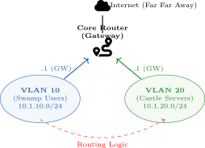
Figure: Diagram supporting the preceding content.
IP Address Management (IPAM)
You cannot have two Ogres sitting in the same chair.
Tools
Don’t use an Excel spreadsheet! Use NetBox or phpIPAM.
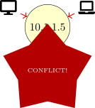
Figure: Diagram supporting the preceding content.
Agreements: The Royal Treaties
Definitions
When Shrek hires Puss in Boots, they sign a contract.
SLA
Service Level Agreement The Promise. "I will catch 99.9% of mice." (Binding Contract)
NDA
Non-Disclosure Agreement The Secret. "You cannot tell anyone where the Swamp is." (Legal Privacy)
MOU
Memo of Understanding The Handshake. "We agree to work together on this quest." (Less Formal)
Discovery workflows identify active hosts and services, building the visibility needed for baseline and anomaly detection.
8.2 Host Discovery: "Who Goes There?"
The Goal: Visibility
Shrek cannot defend the Swamp if he doesn’t know who is in it.
Tools
Ping Sweeps: Yelling "Is anyone there?" ARP Scans: Asking "Who has this IP?"
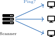
Figure: Diagram supporting the preceding content.
Discovery: Shouting vs. Listening
Active Discovery (Shouting)
Sending packets to devices to provoke a response.
Passive Discovery (Listening)
Just listening to network traffic (like sniffing the air).
Figure: Diagram supporting the preceding content.
Nmap Concepts: The Three States of a Door
What is Nmap asking?
When Nmap scans an IP, it knocks on every "Door" (Port) and categorizes the response into three main states.
1. OPEN (Success)
Response: "Come in!" (SYN-ACK). Meaning: An application is listening. Risk: This is an entry point for hackers.
2. CLOSED (Rejection)
Response: "Go away!" (RST). Meaning: The device is up, but nothing is running on that port.
3. FILTERED (The Void)
Response: Silence... (Timeout). Meaning: A Firewall (Dragon) blocked the packet. Nmap doesn’t know if the port is open or closed.
Figure: Diagram supporting the preceding content.
Nmap in Action: Reading the Output
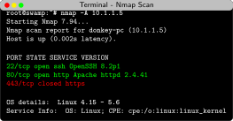
Figure: Diagram supporting the preceding content.
Decoding the Scan
Scan Techniques: Stealth vs. Noise
TCP Connect (-sT)
The "Polite" Knock.
SYN Scan (-sS)
The "Ding-Dong-Ditch".
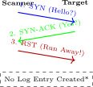
Figure: Diagram supporting the preceding content.
Timing Flags (-T)
-T0 (Paranoid) to -T5 (Insane).
Case Study: Puss in Boots’ Reconnaissance
Scenario
Puss has been hired to test the Swamp’s security. Shrek says: "Find out what ports are open, but don’t wake up the babies (don’t crash anything)."
Target: 10.0.0.0/24 subnet. Constraints: Business hours (9am-5pm).
Strategy Questions
Should Puss use a loud "Connect" scan or a stealthy "SYN" scan?
Should he scan all 65,535 ports or just the Top 100?
How can he identify if the server is running Windows?
Puss’s Plan
Discovery: Use ‘nmap -sn‘ first just to see what is alive (Ping Sweep). Low impact.
Port Scan: Use ‘nmap -sS‘ (SYN Scan) because it is stealthier and lighter on network traffic.
Depth: Scan top 100 ports first. Full scans happen after hours.
OS Detect: Use ‘nmap -O‘ carefully (it sends weird packets to confuse the target).
Figure: Diagram supporting the preceding content.
Discovery Protocols: "Hello Neighbor!"
The Concept
Network devices act like friendly neighbors. Every 60 seconds, they shout their details to anyone connected to them.
What they shout (The Risk)
The Protocols
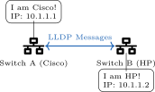
Figure: Diagram supporting the preceding content.
Performance Monitoring: Checking the Pulse
Key Metrics (The Vital Signs)
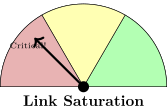
Figure: Diagram supporting the preceding content.
Baselines
You need to know what "Normal" looks like. Is 80% CPU usage bad? Not if it’s always at 80% doing video rendering.
Availability: Is the Drawbridge Down?
Availability = Uptime
"Can users actually do their work?"
Ping vs. Service Check
A server can respond to Ping but still show a "404 Error" website!
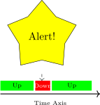
Figure: Diagram supporting the preceding content.
The "Five Nines"
99.999% Uptime means only 5 minutes of downtime per year. This is the gold standard for Enterprise Networks.
Configuration Monitoring: Who Changed the Settings?
Configuration Drift
The network rots over time because people make quick, manual changes and forget to undo them.
The Solution (RANCID)
Tools that automatically backup configs every night and compare them. If a line changed, Shrek gets an email!
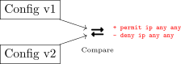
Figure: Diagram supporting the preceding content.
This section covers telemetry and event pipelines using SNMP, syslog, and SIEM correlation for operational awareness.
8.3 SNMP: The Royal Messengers
Simple Network Management Protocol
How we talk to devices without logging into them.
The "Restaurant" Analogy
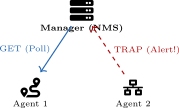
Figure: Diagram supporting the preceding content.
Ports
UDP 161 (Polling) / UDP 162 (Traps)
SNMP Operations: Asking vs. Yelling
1. Polling (GET)
The Manager asks the Agent a question.
2. Traps (Alerts)
The Agent yells at the Manager because something broke.
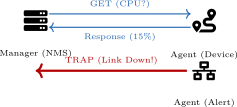
Figure: Diagram supporting the preceding content.
SNMP Versions: Evolution of Security
Version History
SNMPv1: The original. No security.
SNMPv2c: Faster (Bulk transfers), but still Cleartext.
SNMPv3: Secure. Adds Encryption + Authentication.
The Community String Risk
In v1/v2c, the "Password" is called a Community String.
| Ver | Security | Notes |
| v1 | None | Original; cleartext |
| v2c | None | Faster (bulk); cleartext |
| v3 | Auth + Enc | Users, AES/3DES, hashes |
Case Study: Lord Farquaad’s Open Door
Scenario: "Welcome to Duloc"
Lord Farquaad set up SNMP monitoring on all his castle switches. Because he was in a rush, he used the default settings:
Robin Hood sat in the bushes with a laptop and ran a tool called ‘snmpwalk‘. Within seconds, he downloaded the entire network map, including IP addresses, router models, and uptime stats.
Discussion Questions
What specific vulnerability allowed Robin Hood to read the data?
Did Robin Hood need a complex password cracker to do this?
What is the industry-standard way to fix this vulnerability?
Case Study Solution: Lord Farquaad’s Open Door
The Answers
Vulnerability: Cleartext Community Strings. "public" is the default string known by every hacker on earth.
No Cracker Needed: It was an "Open Door." He just asked the routers nicely using the default password.
The Fix: Upgrade to SNMPv3. It uses AuthPriv (Authentication + Privacy/Encryption), so even if Robin Hood captures the packets, he can’t read them.
Figure: Diagram supporting the preceding content.
The Standard Diary
Network devices don’t have screens. They need a place to write down what is happening.
The Components
Facility: "Who is speaking?" (Kernel, Mail, User). Severity: "How bad is it?" (0 to 7).
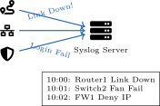
Figure: Diagram supporting the preceding content.
Syslog Severity Levels: 0 to 7
The Scale (Lower = Worse)
| # | Name | Meaning |
| 0 | Emergency | System is dead (Panic). |
| 1 | Alert | Action needed NOW. |
| 2 | Critical | Critical error (RAM fail). |
| 3 | Error | Standard error message. |
| 4 | Warning | Event occurred (Link flap). |
| 5 | Notice | Normal but significant. |
| 6 | Info | Just information. |
| 7 | Debug | EVERYTHING (Developer). |
Mnemonic
Every Alert Creates Errors When Networks Interrupt Donkey.
Figure: Diagram supporting the preceding content.
Security Information & Event Mgmt
Syslog collects logs. SIEM understands them.
Correlation Example
1. Badge Reader: "Puss entered building at 2AM." 2. Server: "Puss logged into Database." 3. Firewall: "Database sending 5GB to Internet." SIEM Conclusion: Data Theft!
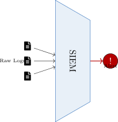
Figure: Diagram supporting the preceding content.
Case Study: The Silent Failure
Scenario: "Why is the bridge up?"
The Castle Drawbridge (Router) stopped working at 3:00 AM. Traffic stopped flowing.
Shrek wakes up at 8:00 AM. He logs into the Router, but the logs only go back to 7:00 AM because the buffer overwrote the old messages. He has no idea why it crashed.
Discussion Questions
Where were the logs stored (Locally vs. Remotely)?
Why did the logs disappear?
What tool would have saved the 3:00 AM error message?
Case Study Solution: The Silent Failure
The Fix
Storage: They were stored in RAM (Buffered Logging). When RAM fills up, old logs are deleted.
Reason: Lack of persistence. Also, if the router rebooted, RAM logs would be lost entirely.
Tool: A Syslog Server. The router should have sent the critical error ("Fan Failure") to the server immediately at 3:00 AM. Shrek could read it later.
Figure: Diagram supporting the preceding content.
Traffic analysis and QoS policies are used to diagnose performance and prioritize critical applications under load.
8.5 Traffic Analysis: NetFlow vs. Packet Capture
1. NetFlow (Metadata)
The Phone Bill.
2. Packet Capture (PCAP)
The Wiretap.
Figure: Diagram supporting the preceding content.
NetFlow / IPFIX: Watching the River
How it works
Routers summarize traffic into "Flows" and send the summary to a Collector.
Finding the "Top Talker"
"Why is the internet slow?" NetFlow says: "Because Donkey’s iPad (10.1.1.50) is downloading 4TB of movies from Netflix."
Figure: Diagram supporting the preceding content.
Packet Capture: The Microscope
Tools
Port Mirroring (SPAN)
Switches normally keep secrets. To capture traffic not meant for you, you must configure a SPAN Port (Switched Port Analyzer). "Copy all traffic from Port 1 to Port 2 (My Sniffer)."
Figure: Diagram supporting the preceding content.
tcpdump: The Command Line Sniffer
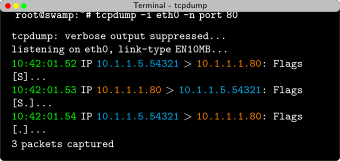
Figure: Diagram supporting the preceding content.
Decoding the Output
Why use tcpdump?
Key Flags
Pro Tip
Capture with tcpdump -w file.pcap on the server, then download the file and open it in Wireshark for ease of use!
Wireshark: Anatomy of a Packet Capture
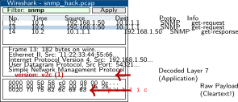
Figure: Diagram supporting the preceding content.
2. Details (Layers)
"The Inspection." Breaks down the packet by OSI Layer.
3. Bytes (Hex)
"The Raw Data." What actually went over the wire.
8.6 Quality of Service (QoS): The VIP Lane
The Problem
Bandwidth is limited. If Donkey downloads a 4K movie while Shrek is on a Video Call, the video will freeze.
The Solution: QoS
Prioritization. Giving critical traffic (Voice/Video) a "Fast Pass" to skip the line.
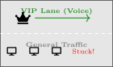
Figure: Diagram supporting the preceding content.
Managing Bandwidth: Shaping vs. Policing
Traffic Shaping (The Buffer)
"Please Wait."
Figure: Diagram supporting the preceding content.
Traffic Policing (The Chop)
"Get Out!"
Figure: Diagram supporting the preceding content.
Classification: Stamping the Envelope
How does the router know?
We add a "Tag" to the packet header so routers know it is VIP.
Layer 2: CoS (Class of Service)
Layer 3: DSCP (DiffServ Code Point)
Figure: Diagram supporting the preceding content.
Scenario: "I c-c-can’t h-hear y-you!"
Shrek is trying to call Fiona using VoIP (Voice over IP). The audio sounds robotic and choppy.
Meanwhile, the 3 Blind Mice are streaming 4K movies in the next room.
Diagnosis:
Discussion Questions
Which metric is ruining the call: Latency or Jitter?
How can we fix this without banning movies entirely?
What DSCP tag should the VoIP phones be using?
Case Study Solution: The Robot Voice
The Fix: Apply QoS
Root Cause: Jitter. (Variation in arrival time makes voice sound robotic).
Strategy: Configure Queuing on the router.
Tagging: Ensure VoIP phones mark traffic as EF (Expedited Forwarding) or DSCP 46.
Figure: Diagram supporting the preceding content.
Key Concepts:
Quality of Service (QoS):
This module covered network operations and monitoring: documentation practices, configuration management, device lifecycle, and baselines for performance tracking. You learned monitoring protocols (SNMP, Syslog, NetFlow), traffic analysis tools (Wireshark), and QoS mechanisms for prioritizing critical traffic. In the final module, we’ll explore security concepts including threats, defense strategies, and access control.